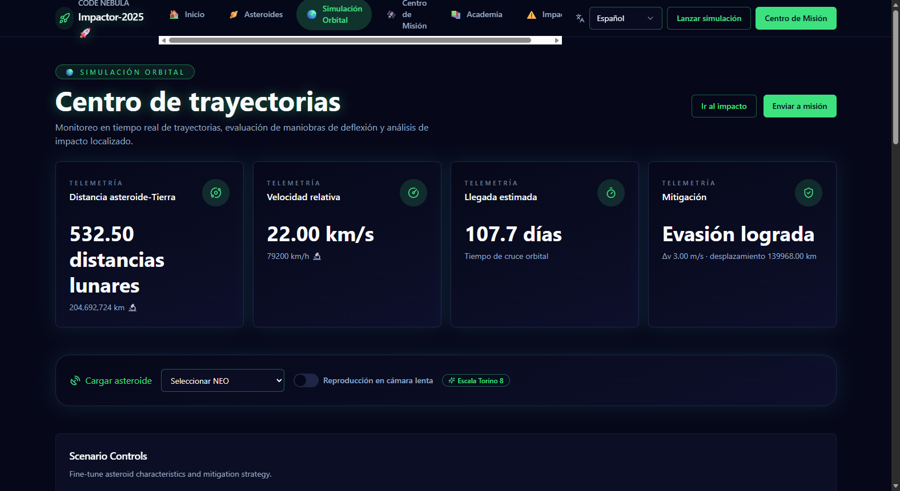

Meteor Madness — Horizons Shield (Impactor-2025)
Plataforma interactiva de defensa planetaria desarrollada para el desafío de NASA Space Apps 2025. Integra datos en tiempo real de la NASA NEO API y del USGS para proyectar trayectorias orbitales heliocéntricas, calcular riesgos de colisión y evaluar misiones de deflexión mediante modelos físicos fundamentados.
Implementación de los modelos matemáticos y físicos del equipo: cálculo de energía cinética de colisión, ecuaciones de escala geológica para estimación del diámetro de cráteres (D ≈ 1.8·(E/10¹⁵)^0.22), conversión a megatones de TNT, magnitud sísmica acoplada (Gutenberg-Richter), sobrepresión atmosférica (5 psi) y balance de la Primera Ley de la Termodinámica (conservación de energía).